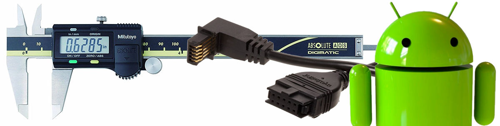
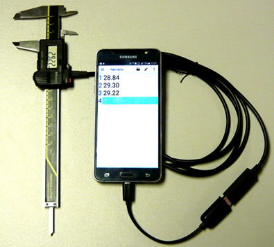
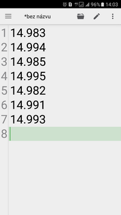
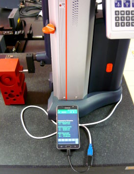
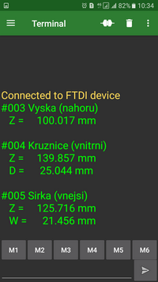
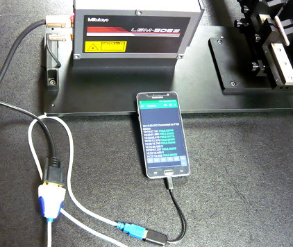
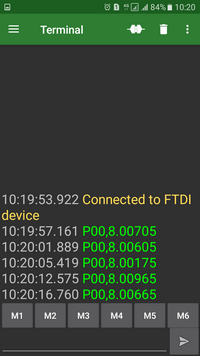
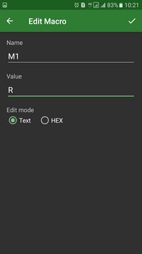
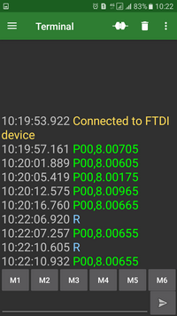

Connecting Mitutoyo small instruments with an Android devices

Many of Mitutoyo small instruments are able to send results to computer or similar electronic device. In praxis should be pretty to connect wide used small Android device as tablets or mobile phones. This composition bring us two fundamental advantages:
- Data keeping and its good visual local presentation.
- Transport of data to target place for saving and final processing.
Connection using USB-ITN cable
Connection using Mitutoyo USB-ITN cable is easiest way for connecting small tools such as calipers, micrometers or dial indicators. Thank HID (Human Interface Device) functionality we need only USB OTG adapter. It realize the transformation of USB A connector to micro USB common used by Android devices. Some arts of this cable allow use it for external power supply with mobile phone power adapter.
Appropriate Android application for visualization of data should be Quick Edit. This simple text editor allow setting of text size, line numbering, etc.


Setup and output record example from the digimatic caliper.
That kind of connection is very easy, cheap and effective. This set of devices should be used for example as small data logger.
To Android device is this way possible connect not only one, but more Mitutoyo instruments. For this case we need use USB OTG cable with more USB input connectors or USB hub.
RS232 connecting using RS232/USB converter
Instruments with RS232 output is possible connect with Android devices using the RS232/USB convertors. Choose convertor with FTDI chip (it is wide used and easy to buy). This way is possible connect for example linear height instruments (LH600) or other instruments with QM Data unit (measuring projectors) or laser scan microscopes (LSM).Appropriate Android application for visualization of data is Serial USB terminal. This application allow setting of text size, using timestamp, send commands to RS232 line using macros, etc.
LH600


Setup and output from LH600. Three measurement results: height, diameter and groove. Records without timestamp.
Laser scan micrometer


Setup and output from LSM. "P00" is prefix, 8.00705 is measured value. Records with timestamp.
Measurements were initialized using the foot switch.


Setting macro M1: send "R" char to RS232. Then is possible start the measuring direct from Android pressing M1 button. See recorded rows with "R". Diferrent (blue) collor denote output direction of RS232 signal.
Wireless RS232 connecting using RS232/bluetooth converter
Principle is possible connect RS232 instruments wireless using RS232/Bluetooth converter. But this solutions is not very efficient from these reasons:
- RS232/BT converter need power supply. It is not for use by small tools.
- When wireless, why use Android as a target device? Better way is use RS232 wireless solutions and as target connect direct the stable PC.
Software and subsequent data processing
It exist some way how process measuring data from Android device.
1) Easiest way is save them into Android filesystem (for example SD card) and then copy them to PC and process these. In this case the Android device works such as data logger. This process is typical by using Serial USB Terminal, because this not allow other kind of data saving as to local filesystem. For transfer of saved file is possible to use usually cable connection or we can transfer the file immediately using some Android file manager (I prefer Solid Explorer).
2) Some programs, for example Quick Edit, allow save data direct to local network using FTP or save them to cloud as Google Drive or Dropbox. In this way we can save measuring data to higher system almost immediately. Quick Edit moreover allow automatic data saving in assigned time interval.
3) Good way for data visualization and print is using JavaScript webpages on local network. This way allow except data processing present the data in graphical form too. Programming JavaScript webpages is relative easy. Disadvantage of this solution is impossibility to save these data direct from the webpage to local filesystem. But results on the webpage page is possible print or save.
4) Similar situation as previous paragraph is using webpages with server-side solution. This solution allow save data to a server database and it is robust solution with continuous data saving. This solutions should be similar as MeasurLink. Disadvantage is, that programming and infrastructure maintenance is not easy.
5) Other good and easy way is using cloud applications like Google Sheets or Excel for Android. Google Sheets in online mode allow save data and view these another place in real time. It some situation it should be great! Future more with some code should Google Sheet application work with “active cells” and it can for example mark cells with color to OK/NOT OK status depending on values (known form ITPAK).
If you use Google Sheets for data processing, do not forget set to the application language US. In other case (and if your country use as decimal delimiter comma) the data from instruments with point as delimiter will not present as number, but as text only. This situation is known by using Excel for the same purposes.
Next continue (in future):
- Continuously data presentation from measuring instruments (especially indicators)
- Connecting DMX and EV boxes
- More examples form data processing application